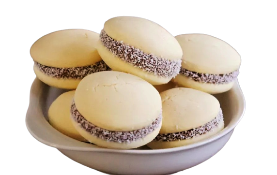
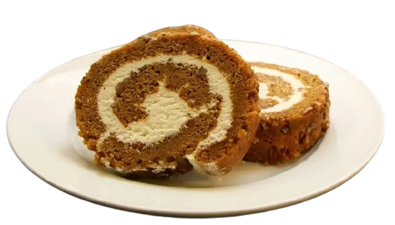

Empanada de
Carne
Es un aperitivo muy particular. La diferencia se encuentra en la forma o decoración que se le da y también en la variedad del relleno, que es lo esencial ya que usualmente este se acomoda a lo típico de cada país.
Alfajor
Se compone de dos o más galletas unidas por un relleno dulce y generalmente bañadas en chocolate, con glaseado o azúcar en polvo, son muy deliciosas y sabrosas para disfrutar de ellas en familia.
Alitas
Bouchet
Son tan ricas las alitas que son ideales para degustarlos como bocaditos en cualquier ocasión especial y por ello es uno de los preferidos por las personas para colocarlo en la mesa de bocaditos y digustarlo con los invitados.
Pionono
Es un delicioso dulce de pequeño tamaño hecho con un bizcocho borracho enrollado sobre sí mismo y coronado con una crema tostada, muy sobresaliente y representativo en fiestas elegantes o tambien en algunas más sencillas.
Profiterol de
Chocolate
Son bolas elaboradas con pasta choux que se rellenan con diversos ingredientes según donde se elaboren y como lo prefiera el cliente. Suelen estar rellenos de ingredientes dulces como crema o chocolate.
Causa
Rellena
Son muy habituales para cualquier evento, cumpleaños, reuniones, fiestas. Se trata de papas aderezadas de cualquier tamaño que le dan un toque especial a la mesa, quedan buenazas y son super rentables.